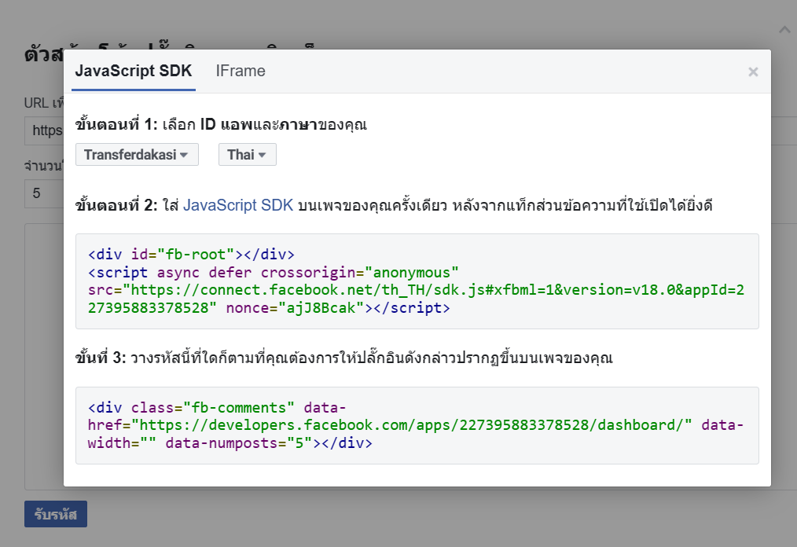

Learn to Code
CSS
The language for styling web pages
JavaScript
The language for programming web pages
Bootstrap
A CSS framework for designing better web pages
FacebookAPI
Connect with customers and improve efficiency with our featured platforms.
Google Map
Build awesome apps with Google’s knowledge of the real world
LineAPI
Get engaged in interactive conversations with LINE users.
CSS
CSS คืออะไร
CSS คือ ภาษาที่ใช้สำหรับตกแต่งเอกสาร HTML/XHTML ให้มีหน้าตา สีสัน ระยะห่าง พื้นหลัง เส้นขอบและอื่นๆ ตามที่ต้องการ CSS ย่อมาจาก Cascading Style Sheets มีลักษณะเป็นภาษาที่มีรูปแบบในการเขียน Syntax แบบเฉพาะและได้ถูกกำหนดมาตรฐานโดย W3C เป็นภาษาหนึ่งในการตกแต่งเว็บไซต์ ได้รับความนิยมอย่างแพร่หลาย

ประโยชน์ของ CSS
CSS มีประโยชน์อย่างหลากหลาย ซึ่งได้แก่
1.ช่วยให้เนื้อหาภายในเอกสาร HTML มีความเข้าใจได้ง่ายขึ้นและในการแก้ไขเอกสารก็สามารถทำได้ง่ายกว่าเดิม เพราะการใช้ CSS จะช่วยลดการใช้ภาษา HTML ลงได้ในระดับหนึ่ง และแยกระหว่างเนื้อหากับรูปแบบในการแสดงผลได้อย่างชัดเจน
2.ทำให้สามารถดาวน์โหลดไฟล์ได้เร็ว เนื่องจาก code ในเอกสาร HTML ลดลง จึงทำให้ไฟล์มีขนาดเล็กลง
3.สามารถกำหนดรูปแบบการแสดผลจากคำสั่ง style sheet ชุดเดียวกัน ให้มีการแสดงผลในเอกสารแบบเดียวทั้งหน้าหรือในทุกๆ หน้าได้ ช่วยลดเวลาในการปรับปรุงและทำให้การสร้างเอกสารบนเว็บมีความรวดเร็วยิ่งขึ้น นอกจากนี้ยังสามารถควบคุมการแสดงผล ให้คล้ายหรือเหมือนกันได้ในหลาย Web Browser
4.ช่วยในการกำหนดการแสดงผลในรูปแบบที่มีความเหมาะกับสื่อต่างๆ ได้เป็นอย่างดี
5.ทำให้เว็บไซต์มีความเป็นมาตรฐานมากขึ้นและมีความทันสมัย สามารถรองรับการใช้งานในอนาคตได้ดี

ตัวอย่างการใช้งาน css
หากเราต้องการเปลี่ยนสีตัวหนังสือของ tag h1 และ เปลี่ยนสีพื้นหลัง ให้ใช้ code ตามนี้
Try it Yourself
Javascript
JavaScript คืออะไร
JavaScript เป็นภาษาโปรแกรมที่นักพัฒนาใช้ในการสร้างหน้าเว็บแบบอินเทอร์แอคทีฟ ตั้งแต่การรีเฟรชฟีดสื่อโซเชียลไปจนถึงการแสดงภาพเคลื่อนไหวและแผนที่แบบอินเทอร์แอคทีฟ ฟังก์ชันของ JavaScript สามารถปรับปรุงประสบการณ์ที่ผู้ใช้จะได้รับจากการใช้งานเว็บไซต์ และในฐานะที่เป็นภาษาในการเขียนสคริปต์ฝั่งไคลเอ็นต์ จึงเป็นหนึ่งในเทคโนโลยีหลักของ World Wide Web ยกตัวอย่างเช่น เมื่อคุณท่องเว็บแล้วเห็นภาพสไลด์ เมนูดร็อปดาวน์แบบคลิกให้แสดงผล หรือสีองค์ประกอบที่เปลี่ยนแบบไดนามิกบนหน้าเว็บ นั่นคือคุณเห็นเอฟเฟกต์ของ JavaScript
JavaScript นำไปใช้ทำอะไร
แต่ก่อนเว็บเพจเป็นแบบคงที่คล้ายกับหน้าหนังสือ โดยหลักแล้วหน้าเพจคงที่แสดงข้อมูลในเค้าโครงที่ตายตัว และไม่ได้ทำทุกอย่างที่ตอนนี้เราคาดหวังจากเว็บไซต์สมัยใหม่ JavaScript เกิดขึ้นในฐานะเทคโนโลยีฝั่งเบราว์เซอร์เพื่อทำให้เว็บแอปพลิเคชันมีความเป็นไดนามิกมากขึ้น เมื่อใช้ JavaScript เบราว์เซอร์จะสามารถตอบสนองต่อการโต้ตอบของผู้ใช้และเปลี่ยนแปลงเค้าโครงเนื้อหาบนเว็บเพจได้ เมื่อภาษาผ่านการพัฒนาอย่างเต็มที่ นักพัฒนา JavaScript ก็สร้างไลบรารี เฟรมเวิร์ก และแนวทางปฏิบัติในการเขียนโปรแกรม แล้วเริ่มนำ JavaScript ไปใช้นอกเว็บเบราว์เซอร์ วันนี้ คุณสามารถใช้ JavaScript สำหรับทั่งการพัฒนาฝั่งไคลเอ็นต์และฝั่งเซิร์ฟเวอร์ เราให้ตัวอย่างกรณีการใช้พบที่พบบ่อยบางส่วนในหัวข้อย่อยต่อไปนี้: แต่ก่อนเว็บเพจเป็นแบบคงที่คล้ายกับหน้าหนังสือ โดยหลักแล้วหน้าเพจคงที่แสดงข้อมูลในเค้าโครงที่ตายตัว และไม่ได้ทำทุกอย่างที่ตอนนี้เราคาดหวังจากเว็บไซต์สมัยใหม่ JavaScript เกิดขึ้นในฐานะเทคโนโลยีฝั่งเบราว์เซอร์เพื่อทำให้เว็บแอปพลิเคชันมีความเป็นไดนามิกมากขึ้น เมื่อใช้ JavaScript เบราว์เซอร์จะสามารถตอบสนองต่อการโต้ตอบของผู้ใช้และเปลี่ยนแปลงเค้าโครงเนื้อหาบนเว็บเพจได้ เมื่อภาษาผ่านการพัฒนาอย่างเต็มที่ นักพัฒนา JavaScript ก็สร้างไลบรารี เฟรมเวิร์ก และแนวทางปฏิบัติในการเขียนโปรแกรม แล้วเริ่มนำ JavaScript ไปใช้นอกเว็บเบราว์เซอร์ วันนี้ คุณสามารถใช้ JavaScript สำหรับทั่งการพัฒนาฝั่งไคลเอ็นต์และฝั่งเซิร์ฟเวอร์ เราให้ตัวอย่างกรณีการใช้พบที่พบบ่อยบางส่วนในหัวข้อย่อยต่อไปนี้:
JavaScript ทำงานอย่างไร
ภาษาโปรแกรมทั้งหมดทำงานด้วยการแปลไวยากรณ์ที่คล้ายภาษาอังกฤษเป็นโค้ดสำหรับเครื่อง จากนั้นระบบปฏิบัติการจะเรียกใช้โค้ดนั้น JavaScript ได้รับการจัดประเภทอย่างกว้าง ๆ ว่าเป็นภาษาเขียนสคริปต์ หรือภาษาที่แปลผลแล้ว โค้ด JavaScript ได้รับการแปลผล—นั่นคือ แปลโดยตรงเป็นโค้ดภาษาสำหรับเครื่อง ด้วยกลไกล JavaScript ในขณะที่ในภาษาโปรแกรมอื่น ๆ คอมไพเลอร์จะคอมไพล์โค้ดทั้งหมดเป็นโค้ดสำหรับเครื่องในขั้นตอนที่แยกต่างหาก ดังนั้น ภาษาเขียนสคริปต์ทั้งหมดจึงเป็นภาษาโปรแกรม แต่ไม่ใช่ว่าภาษาโปรแกรมทั้งหมดจะเป็นภาษาเขียนสคริปต์เสมอไป
กลไก JavaScript
กลไก JavaScript คือโปรแกรมคอมพิวเตอร์ที่เรียกใช้โค้ด JavaScript กลไก JavaScript เคยเป็นเพียงตัวแปลผล แต่กลไกสมัยใหม่ทั้งหมดใช้การคอมไพล์แบบ Just-in-time หรือรันไทม์เพื่อปรับปรุงประสิทธิภาพ
JavaScript ฝั่งไคลเอ็นต์
JavaScript ฝั่งไคลเอ็นต์หมายถึงวิธีที่ JavaScript ทำงานในเบราว์เซอร์ของคุณ ในกรณี กลไก JavaScript จะอยู่ภายในโค้ดเบราว์เซอร์ เว็บเบราว์เซอร์เจ้าใหญ่ ๆ ทั้งหมดจะมาพร้อมกับกลไก JavaScript ในตัว
นักพัฒนาแอปพลิเคชันเว็บจะเขียนโค้ด JavaScript ที่มีฟังก์ชันที่แตกต่างกันสัมพันธ์กับเหตุการณ์ต่าง ๆ เช่น การคลิกเมาส์ หรือการเลื่อนเมาส์ผ่าน ฟังก์ชันเหล่านี้จะเปลี่ยนแปลง HTML และ CSS ต่อไปนี้เป็นภาพรวมว่า JavaScript ฝั่งไคลเอ็นต์ทำงานอย่างไร:
1.เบราว์เซอร์โหลดเว็บเพจเมื่อคุณเยี่ยมชมเว็บเพจ
2.ระหว่างการโหลด เบราว์เซอร์แปลงหน้าและองค์ประกอบทั้งหมดของหน้า เช่น ปุ่ม ป้าย และกล่องดรอปดาวน์ เป็นโครงสร้างข้อมูลที่เรียกว่าโมเดลอ็อบเจกต์เอกสาร (DOM)
3.กลไก JavaScript ของเบราว์เซอร์แปลงโค้ด JavaScript เป็นไบต์โค้ด โค้ดนี้เป็นตัวกลางระหว่างไวยากรณ์ JavaScript และเครื่อง
4.เหตุการณ์ต่าง ๆ เช่น การคลิกเมาส์บนปุ่ม จะกระตุ้นให้บล็อกโค้ด JavaScript ที่เกี่ยวข้องดำเนินการ จากนั้นกลไกจะแปลผลไบต์โค้ด และทำการเปลี่ยนแปลง DOM
5.เบราว์เซอร์แสดงผล DOM ใหม่
JavaScript ฝั่งเซิร์ฟเวอร์
JavaScript ฝั่งเซิร์ฟเวอร์หมายถึงการใช้ภาษาเขียนโค้ดในลอจิกของเซิร์ฟเวอร์แบ็คเอนด์ ในกรณีนี้ กลไก JavaScript จะอยู่บนเซิร์ฟเวอร์โดยตรง ฟังก์ชัน JavaScript ฝั่งเซิร์ฟเวอร์สามารถเข้าถึงฐานข้อมูล ดำเนินการทางตรรกะแบบต่าง ๆ และตอบสนองต่อเหตุการณ์ต่าง ๆ ที่ถูกกระตุ้นจากระบบปฏิบัติการของเซิร์ฟเวอร์ ข้อได้เปรียบหลักของการเขียนสคริปต์ฝั่งเซิร์ฟเวอร์คือคุณสามารถปรับแต่งการตอบสนองของเว็บไซต์โดยอ้างอิงตามข้อกำหนดของคุณ สิทธิ์เข้าถึงของคุณ และคำขอข้อมูลจากระบบได้เป็นอย่างมาก
ฝั่งไคลเอ็นต์เทียบกับฝั่งเซิร์ฟเวอร์
คำว่าไดนามิกอธิบาย JavaScript ทั้งฝั่งไคลเอ็นต์และฝั่งเซิร์ฟเวอร์ พฤติกรรมไดนามิกคือความสามารถที่จะอัปเดตการแสดงของเว็บเพจเพื่อสร้างเนื้อหาใหม่ตามที่จำเป็น ความแตกต่างระหว่าง JavaScript ฝั่งไคลเอ็นต์และฝั่งเซิร์ฟเวอร์อยู่ที่วิธีการที่ JavaScript สร้างเนื้อหาใหม่ โค้ดฝั่งเซิร์ฟเวอร์สร้างเนื้อหาใหม่แบบไดนามิกด้วยการใช้ลอจิกของแอปพลิเคชันและปรับเปลี่ยนข้อมูลจากฐานข้อมูล ส่วน JavaScript ฝั่งไคลเอ็นต์สร้างเนื้อหาใหม่แบบไดนามิกภายในเบราว์เซอร์โดยใช้ลอจิกอินเทอร์เฟซผู้ใช้ และปรับเปลี่ยนเนื้อหาเว็บเพจที่อยู่บนไคลเอ็นต์อยู่แล้ว ความหมายมีความแตกต่างกันเล็กน้อยในสองบริบทแต่ก็มีความเกี่ยวข้องกัน และทั้งสองแนวทางทำงานร่วมกันเพื่อปรับปรุงประสิทธิภาพการใช้งานของผู้ใช้
นอกเหนือจากการนำไปใช้ในคุณสมบัติไดนามิกแล้ว ความแตกต่างอีกประการหนึ่งระหว่างการใช้ JavaScript สองแบบคือทรัพยากรที่โค้ดสามารถเข้าถึงได้ ทางฝั่งไคลเอ็นต์ เบราว์เซอร์จะควบคุมสภาพแวดล้อมรันไทม์ของ JavaScript โค้ดจึงสามารถเข้าถึงได้เพียงทรัพยากรที่เบราว์เซอร์อนุญาตให้โค้ดเข้าถึงเท่านั้น ตัวอย่างเช่น โค้ดไม่สามารถเขียนเนื้อหาลงในฮาร์ดดิสก์ของคุณได้เว้นแต่คุณจะคลิกปุ่มดาวน์โหลด ในทางกลับกัน ฟังก์ชันฝั่งเซิร์ฟเวอร์สามารถเข้าถึงทรัพยากรทั้งหมดของเครื่องเซิร์ฟเวอร์ได้ตามที่จำเป็น
ตัวอย่างการใช้งาน JavaScript
html
CSS
JS
Try it Yourself
Bootstrap
bootstrap คืออะไร?
Bootstrap คือ Frontend Framework ยี่ห้อหนึ่งที่ช่วยให้เราสามารถสร้างหน้าเว็บให้ตรงตามแบบที่เราต้องการได้ง่ายขึ้น เพราะ Bootstrap มีทั้งระบบ grid ที่ช่วยเรื่องการวาง layout ที่รองรับในแบบ responsive และมี component สำเร็จรูปให้ใช้ ถ้าเราอยากได้ของที่ต้องใช้บ่อยๆ แต่ไม่อยากคราฟเองเช่น table card หรือปุ่มสวยๆ bootstrap ก็สามารถช่วยให้เราสร้างขึ้นมาได้ง่ายๆ ตามแบบที่ bootstrap ได้วางไว้อีกด้วย
bootstrap ติดตั้งยังไง?
แล้วลองใช้ปุ่มของ bootstrap ดู
ถ้าใครได้ปุ่มออกมาแบบนี้แสดงว่าเราพร้อมที่จะลองใช้มันแล้ว (จะเห็นว่าได้ปุ่มสวยๆ มาแบบนี้โดยที่เรายังไม่ต้องแตะ CSS เลยแม้แต่นิดเดียว)

Try it Yourself
FacrbookAPI
Facrbook API คืออะไร
Facebook API ที่ใช้มากที่สุดคือ API กราฟซึ่งเป็นคุณสมบัติพื้นฐานที่ดึงกราฟสังคมสำหรับการเชื่อมต่อทั้งหมดระหว่างผู้คนหน้าเหตุการณ์เหตุการณ์ข้อความภาพถ่ายความคิดเห็นและความชอบ
การแตะกราฟโซเชียล Facebook ช่วยให้เว็บแอปพลิเคชันของคุณโต้ตอบกับข้อมูลได้หลายวิธี คุณสามารถรับข้อความล่าสุดจากผู้ใช้เข้าถึงและดาวน์โหลดอัลบั้มรูปภาพและค้นหา "ชอบ" ที่เป็นที่นิยมมากที่สุดในเครือข่ายสังคมทั้งหมด
Graph API
มีฟังก์ชั่นการค้นหาที่ช่วยให้คุณสามารถดึงและวิเคราะห์ข้อมูลนี้ได้อย่างง่ายดายตราบใดที่ข้อมูลของผู้ใช้เป็นสาธารณะและไม่เป็นส่วนตัว หากเป็นแบบส่วนตัวแอปพลิเคชันของคุณจะต้องมีการเข้าถึงสัญลักษณ์ Facebook เพื่อขออนุญาตจากผู้ใช้
Facebook API
หลังจากสมัคร Facebook app แล้วให้เข้าเว็บที่ชื่อว่า Meta เพื่อทำปุ่มปลั๊กอินความคิดเห็น เข้าเว็บ meta แล้วให้เลื่อรลงมาด้านล่างจะเจอ การผสานการทำงานทางโซเชียล ให้กดเข้าไป เลื่อนลงจะเจอ โซเชียลปลั๊กอิน ให้กดเข้าไป เลื่อนลงจะเจอหน้านี้ ให้กดเข้าไป เลื่อนลงจะเจอปลั๊กอินความคิดเห็นให้กดเข้าไป ให้ไปคัดลอก url หน้าท่ี่สร้าง Facebook App มาใส่ในช่องเพื่อรับรหัส
ให้นำโค้ดไปใส่ใน HTML
จะได้หน้าตาแบบนี้สามารถคอมเม้นได้ กดไลค์ได้

Google map
Google Map API คืออะไร
google map api เป็บริการแผนที่ๆ มีความสามารถมากมาย จาก google โดยเราสามารถ
- ค้นหาข้อมูลของสถานที่
- หาและนำทางไปยังที่ต่างๆ ที่ต้องการ
- มองดูภาพสถานที่จริง ในทั่วโลกผ่าน street view
โดย google ให้เราสามารถนำ google maps ไปใช้งานได้ทั้งในเว็บหรือ mobile
การโหลด Google Maps บนหน้าเว็บ
สร้างตำแหน่งที่จะวางแผนที่
การตั้งค่าเบื้องต้น
โหลดแผนที่โดยใช้ฟังก์ชัน
โดยกำหนด callback คือชื่อฟังก์ชัน myMap ทำให้เราสามารถเปิดการใช้งานฟังก์ชัน myMap ได้ทันที
LineAPI
ก่อนจะเข้าเรื่องว่า LINE API คืออะไร สำหรับผู้ที่ไม่ทราบว่า API คืออะไร สามารถหาอ่านได้จาก บทความ API คืออะไร ใช้ทำอะไร เป็น Applications Program Interface สำหรับผู้ที่ทราบแล้วรู้หรือไม่ว่าทาง LINE NAVER เองได้ประกาศเผยแพร่ API document ออกมาช่วงกลางปี 2016 เพื่อให้ developer ได้เข้ามาทดสอบและใช้งานกัน เรียกว่า Messaging API ซึ่งสามารถหาอ่านได้ที่ https://developers.line.me/messaging-api/overview ต่อจากบทความ บทที่1 ทำ LINE Bot สามารถโต้ตอบ หรือ Chatbot ด้วย Python (Official) เรามาทำความเข้าใจให้มากขึ้นถึงวิธีการใช้ API เพื่อนำไปต่อยอดใช้งานกับ bot ของเราได้มากขึ้น เริ่มต้นจากทำความรู้จักกับ Messaging API ก่อน
การทำงานของ Messaging API (LINE API)
Messaging API ทำการเชื่อมต่อระหว่าง user ผ่านทาง LINE official account หรือ LINE@ account ซึ่งด้วย Messaging API นี้เราจะสามารถ accept friend รวมถึงส่ง message หา user คนอื่นๆ ที่ add account เราเป็นเพื่อน โดยผ่านหน้า LINE@ Manager ที่เราตั้งไว้ หรือ ส่งออกจากจาก server ของเราก็ได้ในรูปแบบ interactive โต้ตอบ line messaging การใช้งสาน Messaging API ทำให้คุณสามารถส่งข้อมูลระหว่าง server ของเรา ไปยัง user LINE ผ่านทาง LINE Platform ซึ่ง Request ที่ใช้ส่งข้อมูลต้องอยู่ในรูป JSON format โดยตัว server เราจะต้องเชื่อมต่อกับ LINE Platform และเมื่อ มี user เพิ่ม account LINE เราเป็นเพื่อน หรือ ส่งข่อความมาหาเรา ทาง LINE Platform จะทำการส่ง request มายัง server ที่เราลงทะเบียนผูกไว้กับ LINE account นั้นทันที วิธีนี้เรียกว่า Webhook ซึ่งมันทำให้ผู้ใช้งานรู้สึกเหมือนกับว่าได้โต้ตอบกับคนจริงๆ การรับข้อมูลจาก LINE Platform ข้อมูลจะถูกส่งมาที่ URL ของ server เรา เมื่อไรก็ตามที่มี user ทำการติดต่อกับ account ของเรา ซึ่งมีด้วยกัน 2 แบบ คือ
User ส่งข้อความ (message) User มี action เช่น add LINE ID ของเราเป็นเพื่อน (operation)
รูปแบบข้อมูลที่ส่งมาจะผ่านทาง HTTP ที่เราตั้ง URL ไว้กับ LINE โดยข้อมูลจะอยู่ในรูป JSON format ซึ่งมีเนื้อข้อมูลตาม operation ที่ user ติดต่อไป และทุกๆ request จะมี signature ใส่ไปในส่วน header ด้วย ซึ่ง server เราจะต้องทำการตรวจสอบ signature นี้ว่าถูกส่งมาจาก LINE Platform จริงๆ ไม่ใช่มีผู้ปลอมแปลงส่งมา
การส่งข้อมูลไปหา LINE Platform
เราสามารถใช้ APIs ที่ทาง LINE Platform ให้ไว้ใช้สำหรับการส่งข้อมูลจาก server เราไปหา user ซึ่งความสามารถที่ทำได้คือส่งข้อความ ไปยัง user หรือ ใครก็ตามที่เพิ่มเราเป็นเพื่อนไว้ดึงข้อมูลชื่อ display ของ user ซึ่ง server เราสามารถเรียกAPIs เพื่อส่งข้อ message ไปหา user ได้ตลอดเวลา โดยเราจะต้องทำการตั้งค่า Channel access token (Channel ID), Channel secret และ Channel MID ซึ่ง APIs ทั้งหมดนี้ต้องใช้ผ่าน HTTPS